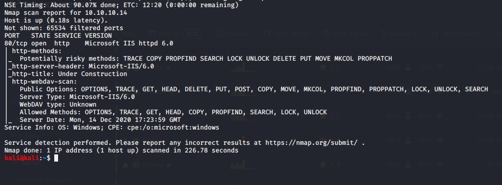

nmap scan is as follows

in allowed methods trace is there so when there is cross site tracing available along with trace so it can be exploited

https://www.rapid7.com/db/modules/exploit/windows/iis/iis_webdav_scstoragepathfromurl/
found this


https://www.rapid7.com/db/modules/exploit/windows/local/ms_ndproxy/


thr one which has user like trying that here wmiprvse.exe

thus it worked

used suggester
these local exploits stuff isnt used so much in the real world though


works when ran it again with corect lport and all

u had the rgiht exploit so reset the machine